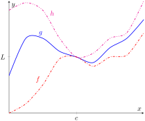
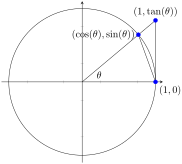

In Section 1.1 we explored the concept of the limit without a strict definition, meaning we could only make approximations. In the previous section we gave the definition of the limit and demonstrated how to use it to verify our approximations were correct. Thus far, our method of finding a limit is
make a really good approximation either graphically or numerically, and
verify our approximation is correct using a \(\varepsilon\)-\(\delta\) proof.
Recognizing that \(\varepsilon\)-\(\delta\) proofs are cumbersome, this section gives a series of theorems which allow us to find limits much more quickly and intuitively.
Suppose that \(\lim_{x\to 2} f(x)=2\) and \(\lim_{x\to 2} g(x) = 3\text{.}\) What is \(\lim_{x\to 2}(f(x)+g(x))\text{?}\) Intuition tells us that the limit should be \(5\text{,}\) as we expect limits to behave in a nice way. The following theorem states that already established limits do behave nicely.
Theorem1.3.1.Basic Limit Properties.
Let \(b\text{,}\)\(c\text{,}\)\(L\) and \(K\) be real numbers, let \(n\) be a positive integer, and let \(f\) and \(g\) be functions defined on an open interval \(I\) containing \(c\) with the following limits:
Part c of the previous example demonstrates how the limit of a quadratic polynomial can be determined using the properties of Theorem 1.3.1. Not only that, recognize that
i.e., the limit at \(2\) could have been found just by plugging \(2\) into the function. This holds true for all polynomials, and also for rational functions (which are quotients of polynomials), as stated in the following theorem.
Theorem1.3.3.Limits of Polynomial and Rational Functions.
Let \(p(x)\) and \(q(x)\) be polynomials and \(c\) a real number. Then:
as it seemed fairly obvious. The previous theorems state that many functions behave in such an “obvious” fashion, as demonstrated by the rational function in Example 1.3.4.
Polynomial and rational functions are not the only functions to behave in such a predictable way. The following theorem gives a list of functions whose behavior is particularly “nice” in terms of limits. In Section 1.5, we will give a formal name to these functions that behave “nicely.”
Theorem1.3.5.Limits of Common Functions.
Let \(c\) be a real number in the domain of the given function and let \(n\) be a positive integer. The following limits hold:
Again, we can approach this in two ways. First, we can use the exponential/logarithmic identity that \(e^{\ln(x)} = x\) and evaluate \(\lim\limits_{x\to 1} e^{\ln(x)} = \lim\limits_{x\to 1} x = 1\text{.}\)
We can also use the Compositions rule. Using Theorem 1.3.5, we have \(\lim\limits_{x\to 1}\ln(x) = \ln(1) = 0\) and \(\lim_{x\to 0} e^x= e^0=1\text{,}\) satisfying the conditions of the Compositions rule. Applying this rule,
which is of the form \(\frac{0}{0}\text{.}\) This, of course, violates a condition of the Quotients rule, as the limit of the denominator is not allowed to be \(0\text{.}\) Therefore, we are still unable to evaluate this limit with tools we currently have at hand.
Based on what we've done so far, this section could have been titled “Using Known Limits to Find Unknown Limits.” By knowing certain limits of functions, we can find limits involving sums, products, powers, etc., of these functions. We further the development of such comparative tools with the Squeeze Theorem, a clever and intuitive way to find the value of some limits.
Before stating this theorem formally, suppose we have functions \(f\text{,}\)\(g\text{,}\) and \(h\) where \(g\) always takes on values between \(f\) and \(h\text{;}\) that is, for all \(x\) in an interval,
If \(f\) and \(h\) have the same limit at \(c\text{,}\) and \(g\) is always “squeezed” between them, then \(g\) must have the same limit as well. That is what the Squeeze Theorem states. This is illustrated in Figure 1.3.7.

Figure1.3.7.An illustration of the Squeeze Theorem
Theorem1.3.8.Squeeze Theorem.
Let \(f\text{,}\)\(g\) and \(h\) be functions on an open interval \(I\) containing \(c\) such that for all \(x\) in \(I\text{,}\)
It can take some work to figure out appropriate functions by which to “squeeze” a given function. However, that is generally the only place where work is necessary; the theorem makes the “evaluating the limit part” very simple.
We use the Squeeze Theorem in the following example to finally prove that \(\lim\limits_{x\to 0} \frac{\sin(x)}{x} = 1\text{.}\)
We begin by considering the unit circle. Each point on the unit circle has coordinates \((\cos(\theta),\sin(\theta))\) for some angle \(\theta\) as shown in Figure 1.3.10. Using similar triangles, we can extend the line from the origin through the point to the point \((1,\tan(\theta))\text{,}\) as shown. (Here we are assuming that \(0\leq \theta \leq \pi/2\text{.}\) Later we will show that we can also consider \(\theta \leq 0\text{.}\))

Figure1.3.10.The unit circle and related triangles
Figure 1.3.10 shows three regions have been constructed in the first quadrant, two triangles and a sector of a circle, which are also drawn below. The area of the large triangle is \(\frac{1}{2}\tan(\theta)\text{;}\) the area of the sector is \(\theta/2\text{;}\) the area of the triangle contained inside the sector is \(\frac{1}{2}\sin(\theta)\text{.}\) It is then clear from Figure 1.3.11 that
(These inequalities hold for all values of \(\theta\) near \(0\text{,}\) even negative values, since \(\cos(-\theta) = \cos(\theta)\) and \(\sin(-\theta) = -\sin(\theta)\text{.}\))
Clearly this means that \(\lim\limits_{\theta\to 0} \frac{\sin(\theta)}{\theta}=1\text{.}\)
Two notes about the Example 1.3.9 are worth mentioning. First, one might be discouraged by this application, thinking “I would never have come up with that on my own. This is too hard!” Don't be discouraged; within this text we will guide you in your use of the Squeeze Theorem. As one gains mathematical maturity, clever proofs like this are easier and easier to create.
Second, this limit tells us more than just that as \(x\) approaches \(0\text{,}\)\(\sin(x)/x\) approaches \(1\text{.}\) Both \(x\) and \(\sin(x)\) are approaching \(0\text{,}\) but the ratio of \(x\) and \(\sin(x)\) approaches \(1\text{,}\) meaning that they are approaching \(0\) in essentially the same way. Another way of viewing this is: for small \(x\text{,}\) the functions \(y=x\) and \(y=\sin(x)\) are essentially indistinguishable.
We include this special limit, along with three others, in the following theorem.
A short word on how to interpret the latter three limits. We know that as \(x\) goes to \(0\text{,}\)\(\cos(x)\) goes to \(1\text{.}\) So, in the second limit, both the numerator and denominator are approaching \(0\text{.}\) However, since the limit is \(0\text{,}\) we can interpret this as saying that “\(\cos(x)\) is approaching \(1\) faster than \(x\) is approaching \(0\text{.}\)”
In the third limit, inside the parentheses we have an expression that is approaching \(1\) (though never equaling \(1\)), and we know that \(1\) raised to any power is still \(1\text{.}\) At the same time, the power is growing toward infinity. What happens to a number near \(1\) raised to a very large power? In this particular case, the result approaches Euler's number, \(e\text{,}\) approximately \(2.718\text{.}\)
In the fourth limit, we see that as \(x\to 0\text{,}\)\(e^x\) approaches \(1\) “just as fast” as \(x\to 0\text{,}\) resulting in a limit of \(1\text{.}\)
The special limits stated in Theorem 1.3.12 are called indeterminate forms; in this case they are of the form \(0/0\text{,}\) except the third limit, which is of a different form. You'll learn techniques to find these limits exactly using calculus in Section 6.7.
Our final theorem for this section will be motivated by the following example.
which is of the form \(\frac{0}{0}\text{,}\) an indeterminate form. We cannot apply the theorem.
By graphing the function, as in Figure 1.3.14, we see that the function seems to be linear, implying that the limit should be easy to evaluate. Recognize that the numerator of our quotient can be factored:
Figure1.3.14.Graphing \(f\) in Example 1.3.13 to understand a limit
Clearly \(\lim\limits_{x\to 1}(x+1) = 2\text{.}\) Recall that when considering limits, we are not concerned with the value of the function at \(1\text{,}\) only the value the function approaches as \(x\) approaches \(1\text{.}\) Since \((x^2-1)/(x-1)\) and \(x+1\) are the same at all points except at \(x=1\text{,}\) they both approach the same value as \(x\) approaches \(1\text{.}\) Therefore we can conclude that
The key to Example 1.3.13 is that the functions \(y=(x^2-1)/(x-1)\) and \(y=x+1\) are identical except at \(x=1\text{.}\) Since limits describe a value the function is approaching, not the value the function actually attains, the limits of the two functions are always equal.
Theorem1.3.15.Limits of Functions Equal At All But One Point.
Let \(g(x) = f(x)\) for all \(x\) in an open interval, except possibly at \(c\text{,}\) and let \(\lim\limits_{x\to c} g(x) = L\) for some real number \(L\text{.}\) Then
The Fundamental Theorem of Algebra tells us that when dealing with a rational function of the form \(g(x)/f(x)\) and directly evaluating the limit \(\lim\limits_{x\to c} \frac{g(x)}{f(x)}\) returns “0/0”, then \((x-c)\) is a factor of both \(g(x)\) and \(f(x)\text{.}\) One can then use algebra to factor this binomial out, cancel, then apply Theorem 1.3.15. We demonstrate this once more.
Example1.3.16.Evaluating a limit using Theorem 1.3.15.
We attempt to apply Theorem 1.3.3 by substituting \(3\) for \(x\text{.}\) This returns the familiar indeterminate form of “0/0”. Since the numerator and denominator are each polynomials, we know that \((x-3)\) is factor of each. Using whatever method is most comfortable to you, factor out \((x-3)\) from each (using polynomial division, synthetic division, a computer algebra system, etc.). We find that
We begin by trying to apply the Quotients limit rule, but the denominator evaluates to zero. In fact, this limit is of the indeterminate form \(0/0\text{.}\) We will do some algebra to resolve the indeterminate form. In this case, we multiply the numerator and denominator by the conjugate of the numerator.
We end this section by revisiting a limit first seen in Section 1.1, a limit of a difference quotient. Let \(f(x) = -1.5x^2+11.5x\text{;}\) we approximated the limit \(\lim\limits_{h\to 0}\frac{f(1+h)-f(1)}{h}\approx 8.5\text{.}\) We formally evaluate this limit in the following example.
Example1.3.18.Evaluating the limit of a difference quotient.
Let \(f(x) = -1.5x^2+11.5x\text{;}\) find \(\lim\limits_{h\to 0}\frac{f(1+h)-f(1)}{h}\text{.}\)
Since \(f\) is a polynomial, our first attempt should be to employ Theorem 1.3.3 and substitute \(0\) for \(h\text{.}\) However, we see that this gives us “\(0/0\text{.}\)” Knowing that we have a rational function hints that some algebra will help. Consider the following steps:
This section contains several valuable tools for evaluating limits. One of the main results of this section is Theorem 1.3.5; it states that many functions that we use regularly behave in a very nice, predictable way. In Section 1.5 we give a name to this nice behavior; we label such functions as continuous. Defining that term will require us to look again at what a limit is and what causes limits to not exist.
ExercisesExercises
Terms and Concepts
1.
Explain in your own words, without using \(\varepsilon\)-\(\delta\) formality, why \(\lim\limits_{x\to c}b=b\text{.}\)
2.
Explain in your own words, without using \(\varepsilon\)-\(\delta\) formality, why \(\lim\limits_{x\to c}x=c\text{.}\)
3.
What does the text mean when it says that certain functions’ “behavior is ‘nice’ in terms of limits”? What, in particular, is “nice”?
4.
Sketch a graph that visually demonstrates the Squeeze Theorem.